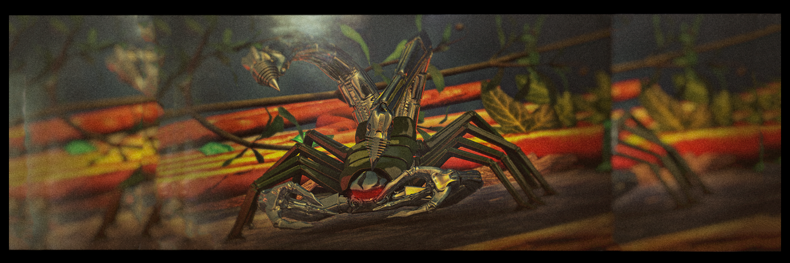
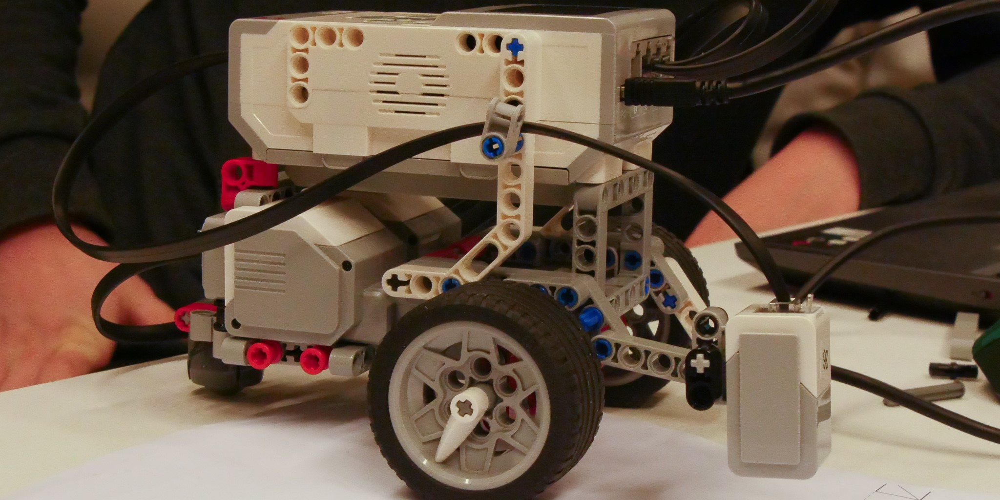

About the robot
Dit is onze robot Scorp, de robot is gemaakt met lego mindstorms en heeft in totaal ongeveer 1 en een halve week geduurdt om de robot te laten werken en om de robot er mooi uit te laten zien. De robot kan lijnen volgen en dingen ontwijken, ook kan de robot op een knop drukken. Als je meer over de robot wilt weten kunt u naar de progress pagina gaan.
